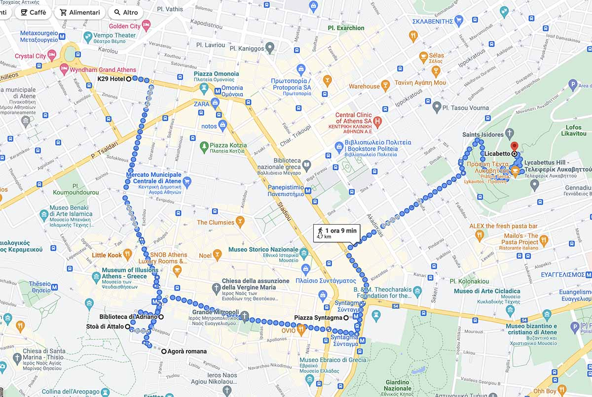
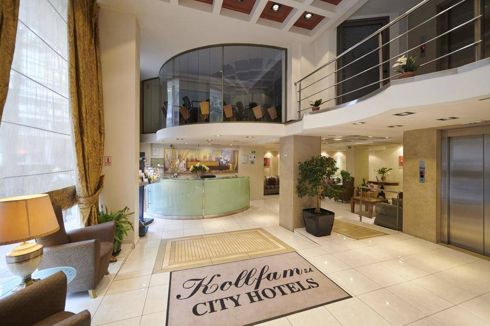
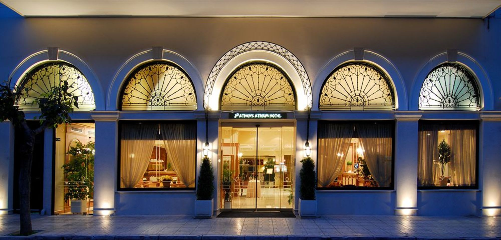
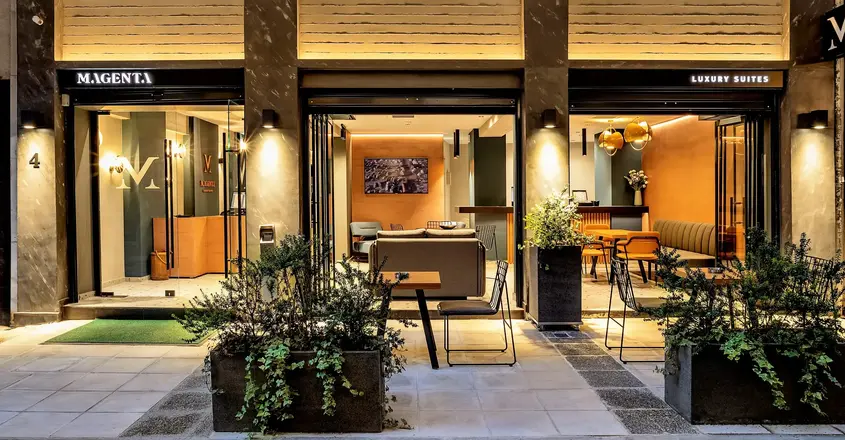
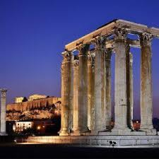

LA STORIA
Atene, fondata nel II millennio a.C. e protetta da Atena, è considerata la culla della civiltà occidentale e della democrazia.
Evolutasi da monarchia a polis aristocratica, raggiunse il suo apogeo nel V secolo a.C. con Pericle dopo le guerre persiane,
diventando un centro culturale e commerciale (porto del Pireo).
Dopo il declino a favore di Sparta e le dominazioni successive,
è oggi la capitale greca. COME RAGGIUNGERLA
Mezzi principali dall'Italia:
Aereo: Voli diretti (circa 2 ore, operati da agenzie come: Ryanair, EasyJet, Wizz Air, ITA Airways) da Roma, Milano, Bologna, Napoli, ecc. verso l'aeroporto "Eleftherios Venizelos" (ATH).
Traghetto (nave): Collegamenti dai porti adriatici (Ancona, Bari, Brindisi, Venezia) verso Patrasso (211 km da Atene) o Igoumenitsa. Le compagnie principali sono Anek Lines, Minoan Lines, Superfast.
Auto: Da Patrasso/Igoumenitsa, Atene è raggiungibile tramite la rete autostradale greca.
Come spostarsi una volta arrivati:
Dall'aeroporto al centro: Metro Linea 3 (blu), treno suburbano, o bus Express X95 (per Piazza Syntagma) e X96 (per il Pireo).
In città: Metropolitana (linee 1, 2, 3), autobus, tram e taxi sono efficienti per muoversi tra le attrazioni.

ALLOGGI
Le migliori zone dove alloggiare ad Atene sono Plaka, Monastiraki e Syntagma, ideali per la loro posizione centrale, per la sicurezza e la vicinanzaa piedi all'Acropoli e ai principali siti archeologici.
Per un'atmosfera più residenziale e tranquilla è consigliabile Koukaki, mentre per il lusso Kolonaki.
HOTEL CHE PROPRONIAMO
EVITA ASTY HOTEL
GOLDEN CITY HOTEL

ATHENS ATRIUM HOTEL

BOB W ATHENS EOLOU

IL CENTRO STORICO
Il centro storico di Atene è un concentrato di storia e fascino, dominato dall'Acropoli e dai suoi musei, con i pittoreschi quartieri di Plaka, Anafiotika, e Monastiraki, ideali per passeggiate tra templi antichi (Partenone, Tempio di Zeus Olimpio) e atmosfere tradizionali, il tutto facilmente visitabile a piedi.
TEMPIO DI ZEUS OLIMPIO
Questo tempio, ad Atene è un imponente tempio corinzio situato vicino all'acropoli, la cui costruzione iniziò nel VI secolo a.C. e completato solo nel 132 d.C.dopo altre 700 anni. Fu il più grande tempio della Grecia antica, originariamente dotato di 104 colonne, di cui oggi ne rimangono solo 15.

PARTENONE
Il Partenone, tempio dorico sull'Acropoli di Atene dedicato ad Atena Parthenos, fu costruito tra il 447 e il 432 a.C. per iniziativa di Pericle. Simbolo della supremazia ateniese, nel tempo fu chiesa bizantina e moschea, venendo gravemente danneggiato da un'esplosione nel 1687.
TEATRO DI DIONISO
Antico teatro greco, situato sulle pendici meridionali dell'Acropoli, è considerato il luogo di nascita del dramma. Ospitava le grandi Dionise, con una capacità di oltre 15000 - 17000 spettatori. In oltre famoso per aver messo in scena le opere di Eschilo, Sofocle ed Euripide.